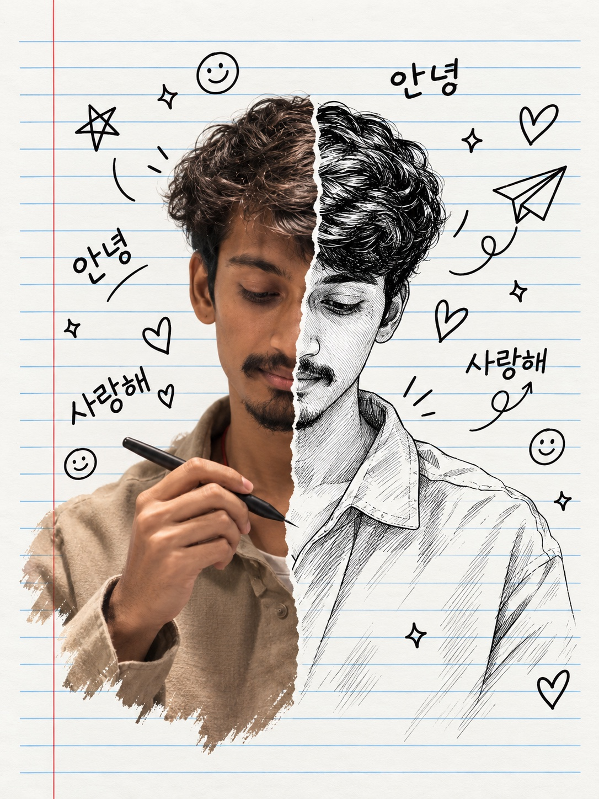

01 / 00:31
Scalebucks
Vertical client reel
- Role
- Video editing
- Format
- Short-form vertical
RAIKO turns creator and brand footage into tightly paced, motion-led, color-finished edits built to hold attention.
Selected vertical client reels edited by RAIKO. Detailed project goals, decisions, and results will be added only when approved by each client.
Vertical client reel
Vertical client reel
Vertical client reel
Play or scrub the timeline to move through a simple Hook → Build → Payoff structure.
Start with a compelling image, a question, or a moment of tension. The opening sets the promise for everything that follows.
This timeline illustrates RAIKO’s editing approach. It is not presented as a breakdown of a specific client project.
Choose an edit from the bin. The selected reel loads into the main monitor so the work stays focused and easy to compare.
Scalebucks · AMR · Sikara · Asian Poultry · Nooni · Sri Dharani · Dentix · Studio
Clear stories, considered pacing, and cuts shaped for the audience.
STORY / RHYTHM / STRUCTURETypography and graphics that help an idea land without competing with it.
TITLES / GRAPHICS / MOVEMENTA consistent visual finish that supports the mood across every shot.
BALANCE / MATCH / MOODI’m an independent video editor working across editing, motion, and color for brands and creators.
I focus on the choices viewers feel: where a sequence begins, when the pace changes, which frame deserves more time, and how the final cut holds together.
Every project starts with the audience and the purpose of the video. The tools support that thinking, rather than becoming the identity of the work.

A portrait between the captured frame and the hand-drawn idea—the same space where every edit begins.
RAIKO / INDEPENDENT VIDEO EDITORShare the goal, audience, footage, deadline, and references. We define the direction together.
Story and pacing come first. Clear feedback helps refine the cut around your vision.
Motion, color, and final polish prepare the video for the places it will live.
Ready to talk about an edit?
The inquiry form asks for your name, company, email, phone or WhatsApp number, video type, project brief, deadline, and reference links. Your contact details are used to reply about your project.
SEND PROJECT INQUIRY ↗Prefer email? Send the same details directly or copy the address below.
workspaceinnovates@gmail.com